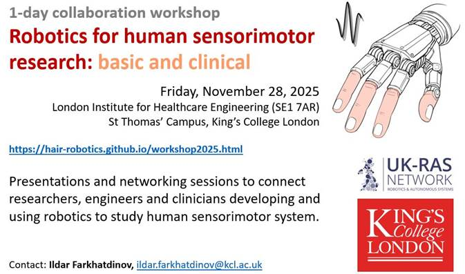

|
1-day workshop:
Robotics for human sensorimotor
research: basic and clinical
When: Friday, November 28, 2025
Where: London Institute for Healthcare Engineering (SE1
7AR), St Thomas Campus, Kings College London
The workshop will feature presentations and networking
sessions designed to connect researchers, engineers, and clinicians who
develop and employ robotics to investigate the human sensorimotor system.
Example topics include, but are not limited to: haptic interfaces for the
study of touch perception; fMRI-compatible robotics for brain imaging;
robotic devices for skin and muscle stimulation; wearable technologies;
systems for human augmentation; prosthetic and exoskeleton robotics; and
robotic platforms for sensorimotor training and assessment.
We invite researchers, academics, and clinicians
interested in presenting at this workshop to get in touch. Presentations
should address the central theme of the event: the development and/or
application of robotics, mechatronics, or haptics in human sensorimotor
research, or the need for such technologies in basic and/or clinical studies
of the sensorimotor system.
Last
call: Registration: several additional tickets were added.
Only
registered attendees will have access to the venue.
Please email the organisers if you cannot attend the
event anymore.
Programme:
|
9:15-9:50 registration
and coffee
|
|
9:50
|
Introduction
and welcome
|
|
|
Industry introduction (3 mins
presentations):
-
TG0,
Dr Liucheng
Guo
-
Delsys Europe, Dr Amy
Robinson
-
Brain
Products UK,
Dr Mario Bartolo
-
Wiley,
Dr Sneha
Rhode Gupta
|
|
10:15-12:00
|
Clinical
aspects (15 mins per presentation incl. Q&A)
|
|
10:15
|
Developing a
brain-computer interface to deliver EEG-based neurofeedback in children
with dystonia, Dr Verity McClelland,
Kings College London (KCL), UK
|
|
10:30
|
Exploring the earliest stages of human
sensorimotor development with fMRI and MR compatible robotics, Professor Tomoki Arichi, KCL, UK
|
|
10:45
|
Sensory
biomarkers for neurodevelopment, Dr Nicolaas
Puts, KCL,
UK
|
|
11:00
|
Haptic
feedback is a key driver of corticospinal excitability in virtual reality
environments, Dr Marco Davare, KCL, UK
|
|
11:15
|
The balance problem, Dr Irene Di Giulio, KCL, UK
|
|
11:30
|
Virtual reality and haptics for management of
neuropathic pain,
Professor Rui Loureiro, University College London, UK
|
|
11:45
|
Haptic
communication for motor learning and rehabilitation,
Dr Ekaterina
Ivanova, Queen Mary University of London, UK
|
|
12:00-13:30 lunch and coffee
|
|
13:30-15:00
|
Fundamental
research (15 mins per presentation incl. Q&A)
|
|
13:30
|
Sensorimotor
augmentation between humans and with robots,
Professor Etienne Burdet,
Imperial College London, UK
|
|
13:45
|
Developing a sensory representation of an
extra robotic body part,
Professor
Tamar Makin, University of Cambridge, UK
|
|
14:00
|
Stochastic
optimal feedforward-feedback control as a theory of human sensorimotor
control, Professor Bastien Berret,
Paris Saclay University, France
|
|
14:15
|
Haptic control of balance during
human-human and human-robot interactions,
Dr Raymond
Reynolds, University of Birmingham, UK
|
|
14:30
|
The
mechanics and mathematics of physical human-robot interaction,
Dr Sajeeva Abeywardena,
University of Surrey, UK
|
|
14:45
|
Remote touch in birds,
humans, robots,
Dr Elisabeta
Versace,
Queen Mary University of London, UK
|
|
15:00-15:30 coffee break
|
|
15:30-17:00
|
Technology
for sensorimotor research (15 mins per presentation incl. Q&A)
|
|
15:30
|
Individualized
adaptive sensing and control for wearable robots, Dr Letizia Gionfrida,
KCL, UK
|
|
15:45
|
Augmenting digital entertainment using
haptic/tactile stimulation: possibilities and pitfalls, Professor Charles Spence,
University of Oxford, UK
|
|
16:00
|
Understanding
and avoiding user induced limit cycles in practical haptic interfaces,
Professor William Harwin,
University of Reading, UK
|
|
16:15
|
Improving human-robot interaction in
wearable robots,
Professor
Carlos A. Cifuentes, University of West England, UK
|
|
16:30
|
Proprioception
illusion as a potential feedback path, Professor Peter Kyberd,
University College London, UK
|
|
16:45
|
Modular robotics for human sensorimotor
research,
Dr Ildar
Farkhatdinov, KCL, UK
|
|
17:00-19:00 Networking drinks
|
The workshop is supported by the UK Robotics and Automation Systems network.
Contact: Dr Ildar Farkhatdinov, ildar.farkhatdinov@kcl.ac.uk

Organisers:
Dr Ildar Farkhatdinov, Kings College London, UK
Professor Tomoki Arichi, Kings College London, UK
Professor Etienne Burdet, Imperial College London,
UK
Dr Joshua Brown, Kings College London and Imperial
College London, UK
|